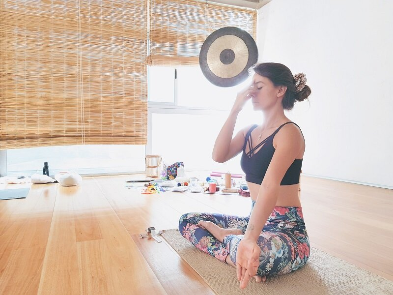

Estas preguntas resultan claves al momentos de atender la congruencia en nuestra labor. Si vamos a facilitar experiencias de yoga infantil a niños y niñas, no podemos dejar de lado nuestra práctica personal, ya que por medio de ella accedemos a los más grandes aprendizajes para ser compartidos con y para la infancia.
El concebir tu práctica de yoga como fuente nutritiva para el abordaje con ellos y ellas, es una decisión responsable, la cual no se puede dejar pasar.
El trabajo con y para la infancia y como cualquier otra labor en la vida, debe ser gestionada desde la total responsabilidad y congruencia, ya que así logramos trascender.
Si hemos decidido acercar el yoga a los niños y a las niñas, es porque nuestra alma vibró con la maravillosa experiencia del yoga y desde ahí nació el impulso a ir más allá, ir a ese lugar donde toda la magia descubierta se comparte, se expande, se multiplica. De ser así el camino, no habrá necesidad de reflexionar sobre la importancia de la regularidad de la práctica personal para continuar un acompañamiento consecuente.
Pero también existen caminos a la inversa, donde ciertos corazones se acercan primero al yoga infantil, valorando este recorrido como una oportunidad para brindar recursos de bienestar a la infancia. Si nos encontramos en esta vereda, es fundamental aferrarnos a la voluntad y disciplina, encontrando el espacio para nuestra propia práctica, valorándola como puente de descubrimientos y grandes avances, propios pero colectivos a la vez.
¿Cómo vamos a enseñar asanas, si no somos capaces de hacerlas nosotras mismas?
¿Cómo vamos a compartir dinámicas de relajación, si no sabemos todo lo que se vivencia en ellas?
¿Cómo vamos a cantar mantras, si no vibramos con su infinito poder?
¿Cómo vamos a pedirles equilibrio, si no hemos revisado el propio?
¿Cómo les vamos a pedir silencio, si no hemos sido capaces de silenciarnos nosotras mismas?
¿Cómo hablamos de meditación, si no hemos meditado nunca?
¿Cómo exigimos no violentar, si somos violentas con nosotras mismas?…
Miles de preguntas pueden continuar esta lista.
Nuestras prácticas regulares nos conectan con la voluntad y disciplina, que se traducen en un esfuerzo espiritual por anhelar nuestro bienestar. La constancia de nuestras prácticas, nos permiten escucharnos y así poder colaborar para que otros y otras se escuchen a si mismos.
La manera que visualices tu práctica personal, es la forma también que percibes tu experiencia con la infancia, desde aquí nacen diversas reflexiones… ¿Cuál es la tuya?
Sólo practicando podrás acceder a todas las infinitas magias del yoga, donde comprenderás que yoga es mucho más allá de geometría, más allá de crear posturas.
¿No tienes una práctica regular y no sabes por dónde empezar?
Prueba diversas clases y estilos para descubrir que necesitas y que ello se acomoda a tus necesidades actuales.
No tengas miedo de probar, te puedes sorprender.
En aquella búsqueda irás descubriendo las características que quieres encontrar en tu profesor/a guía.
Cuando lo hayas o creas haberlo encontrado, quédate un tiempo en ese lugar para vivenciar el proceso, comprometiéndote contigo misma.
Reflexiona en torno a tus posibilidades y limitantes con la práctica.
Déjate sorprender por la diversidad de experiencias: con el goce, la satisfacción, la frustración, el miedo, etc.
Permítete navegar por un océano inmenso donde el oleaje siempre te acompañará, pero convencida que sus aguas siempre te permitirán sanar.
¡¡¡A PRACTICAR!!!